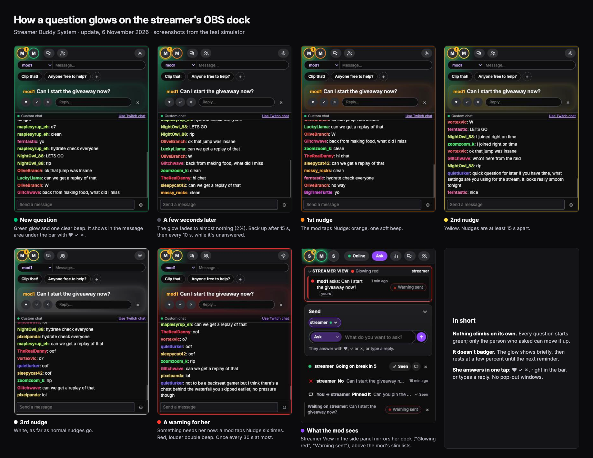

The streamer's OBS dock got calmer and quicker to use: no pop-out windows, one message area that takes turns, one-tap answers (♥ ✓ ✗), a glow that rests, and notes as big as questions.
Mods can see what the streamer sees (Streamer View), nudge a question instead of it escalating by itself, and send her a warning when something needs her right now.
Live now shipped today
For the streamer (OBS chat dock)
Message area. The place to look, just under the bar, a little larger than everything else, in a soft glow coloured by what it shows. With more than one message they take turns every 6 seconds, holding still while her mouse is over it or she's typing a reply; something new jumps straight in. A small "2 of 5 ▾" chip drops down a short one-line list of everything waiting; picking one shows it, and the list closes itself after 8 idle seconds so the turns carry on.
One-tap answers: ♥ ✓ ✗, heart on the left, on any question, or a typed reply.
No pop-out windows. The full list, Connections, chat and stats open just under the bar with a Close button.
Quick info and !vanish notes as big as questions: full width, sender first, larger text, a soft blue glow for quick info (2 minutes) and pink for !vanish (30 seconds). A !vanish note blooms into a pink haze that spills into the background, then breathes gently until it fades.
Pictures show who's in chat. A ring for how recently each mod chatted (green within 5 minutes, then orange, yellow and white), just the picture lit up when they're quiet, and gray once they've left.
Settings gear: sound on or off, volume, reminder beeps, edge glow, the quick-questions row, custom or Twitch chat, chat text size, and whether to share Streamer View.
Starts with the right person. Sending starts with the last person she talked to, never a group.
For the streamer: custom chat (optional)
Message tools as icons. Hovering a message shows a small floating pill: bookmark, reply, and delete (only where she's allowed; it's a real delete on Twitch, for everyone).
Bookmarks for later. A bookmarked message gets a soft amber outline and icon; the bookmark counter in the chat bar jumps back to them, newest first.
"Where I was" line. One click on a message draws an orange line under it across the whole chat; clicking another moves it, clicking the same one removes it.
Flagged lines glow. A line a mod flags glows in her chat in the flagger's colour, and its pinned copy sits at the top of her chat for 10 seconds instead of 5 minutes.
For mods (Twitch Space side panel)
Streamer View. The top of the panel shows what the streamer's dock shows right now: its glow colour, everything waiting for her, unseen answers, and notes in her bar. It follows the channel you're watching.
Simple Ask box. One typing bar, with Ask, Quick info or !vanish picked at its left. It starts with the streamer you're watching. No answer-button editor or quick questions: every question offers her ♥ ✓ ✗.
Slim lists, newest first. Messages and questions to you come first, one line each, with small ♥ ✓ ✗ or Seen buttons, a reply box only when you open it, and × to dismiss; clicking a message line marks it seen. Answers to your questions are one line each; hovering turns a line into a glowing pill, and clicking marks it seen.
Status menu. Online, Idle or Offline, picked from a small menu.
Flag a chat line from Twitch's chat for the streamer to see.
Nudges, warnings and the glow
Nudge instead of a timer
Every question arrives green. Nothing climbs by itself: if it isn't answered, the person who asked taps Nudge (on their question or in Streamer View) and it moves up a colour on her screen, up to three times, 15 seconds apart.
Sending the streamer a warning
For when something needs her attention right now: trouble in chat, a safety issue, anything that can't wait. A mod taps Nudge six times quickly (while it's waiting, or after the third nudge); the button counts down ("Send warning: 3 more") and then says "Warning sent". The question turns red on her screen with a louder double beep, even if she's turned reminder beeps off. It's a mod looking out for the streamer, not a mark against her. At most one every 30 seconds per question, so it can't be spammed.
A glow that rests
The glow no longer stays on. It shows for about 2 seconds, fades down to 2%, and only comes back if the question is still unanswered: after 15 seconds, then every 10 seconds, resting at 5% in between. The words stay fully readable the whole time.
Moment
Colour
Sound
Question arrives
Green
One clear beep
1st nudge
Orange
One soft beep
2nd nudge
Yellow
One soft beep
3rd nudge
White
One soft beep
Warning to her (six quick taps)
Red
Louder double beep
Twitch Space 2.5.0
The handshake button and side panel are back in the public Twitch Space download, so any mod can use everything above. Update by replacing the files in your existing Twitch Space folder and clicking reload on its card; Chrome may ask to allow the side panel.
Two-machine simulator for testing on one computer: a mod's panel and the streamer's dock side by side as pretend users, a fake chat with made-up chatters in their own colours, and buttons for asking, nudging, warning, auto-play, and mods joining, chatting and leaving.
Updates reach an open OBS dock and side panel by themselves within about a minute.
Coming next ideas to decide on
Live test with a real streamer, she in OBS and a mod in Chrome, to check the timing and sounds on a real stream.
Who sees Streamer View. Today every mutual connection sees everything waiting for her, including other people's questions. It could be limited to her Mods tag.
The streamer's quick-questions row ("Clip that!"). It can be hidden in Settings; it could be removed like the mod's.
Keeping bookmarks in custom chat after the dock reloads (today they last until a reload).
What it looks like
From the test simulator. The first six are the streamer's OBS dock; the seventh is the mod's side panel at the same moment, after sending the warning.

The mod's side panel now: Streamer View with Nudge, the Ask bar, and slim newest-first lines with small buttons.Quick info (blue) and a !vanish note (pink haze), as big as a question on the streamer's dock.